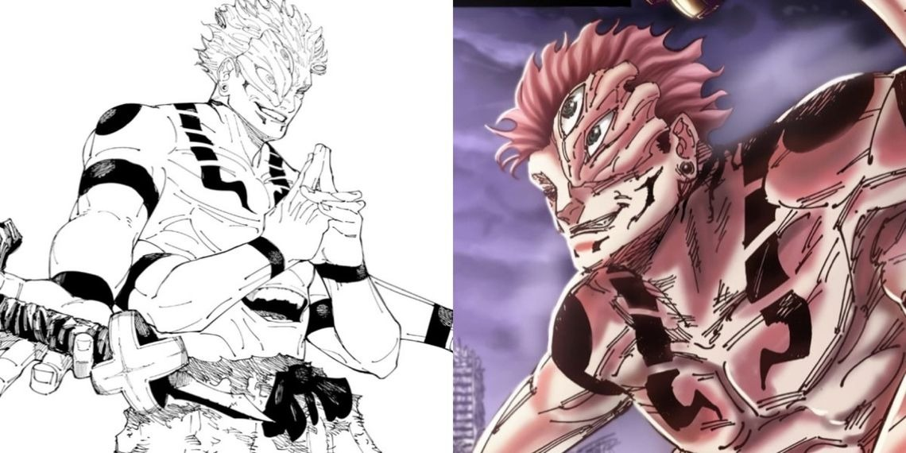

Sukuna é uma figura lendária, cuja existência remonta a cerca de 1000 anos atrás, durante a Era de Ouro da Feitiçaria. Conhecido por sua aparência aterradora - com quatro olhos e quatro braços - e sua natureza impiedosa, ele era um demônio que não poupava nem mulheres, nem crianças em seus atos de crueldade.
Ryomen Sukuna nâo tem uma história aprofundada, provavelmente uma escolha do criador da obra.